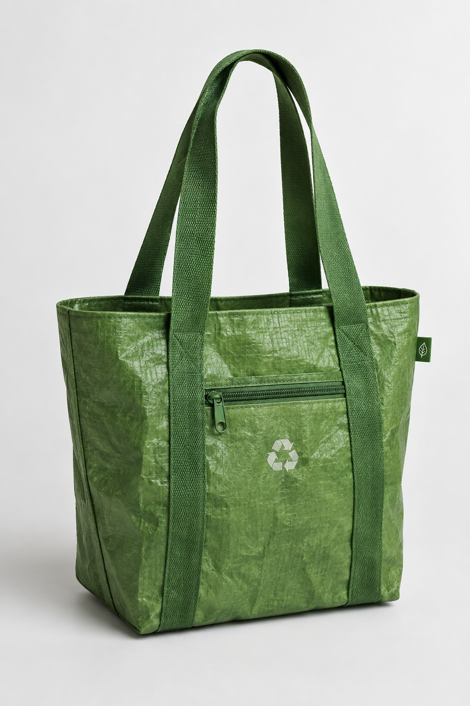
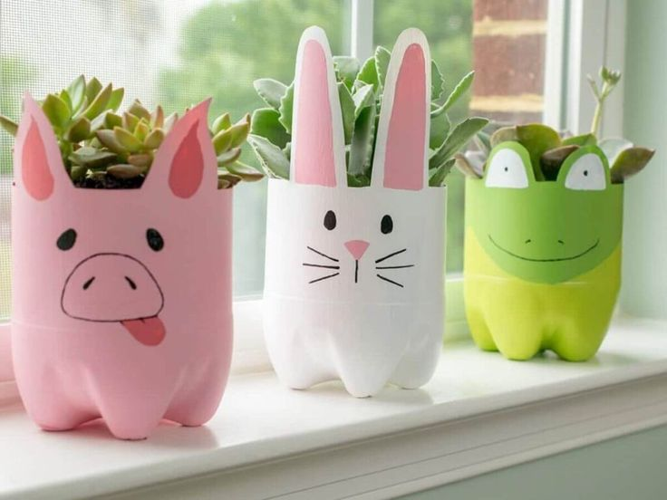
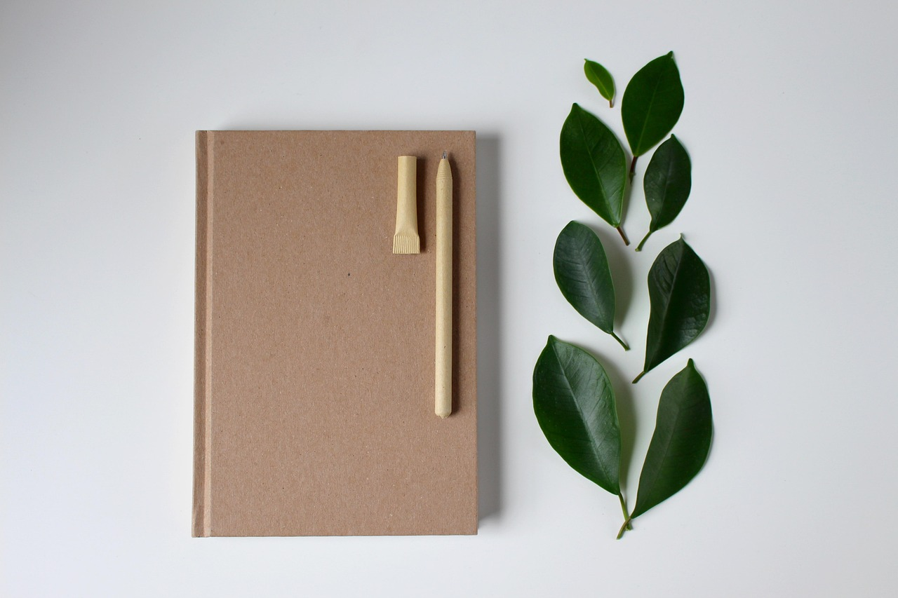
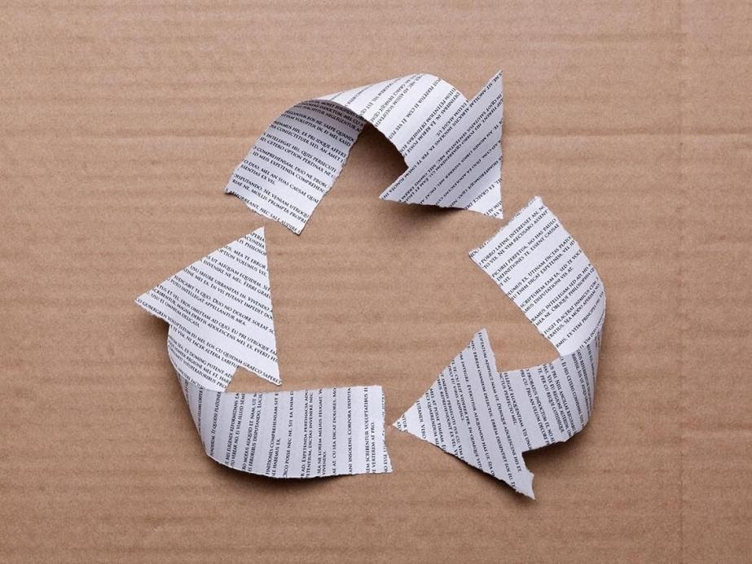

3,5 km
Bank Sampah Malang Google Maps
Sumber: Google Maps
Jl. S. Supriadi No.38 A, Sukun, Kota Malang, Jawa Timur 65147
Buka: Senin-Kamis & Sabtu 08.00-16.00, Jumat 08.00-11.00 & 13.00-16.00 WIB, Minggu Tutup

RELOOP
Temukan pengelola sampah terdekat, pilih dengan tepat, dan jadikan sampah sebagai sumber daya.
Bersama kita wujudkan lingkungan yang lebih bersih dan ekonomi sirkular yang berkelanjutan.
Temukan bank sampah sesuai jenis sampah Anda.
Jl. S. Supriadi No.38 A, Sukun, Kota Malang
Cari pengelola berdasarkan jenis sampah. Plastik, Kertas, Logam, Kaca, dan Elektronik otomatis dikenali sistem sebagai sampah anorganik, sehingga hasil pencarian juga menampilkan Bank Sampah sebagai pengelola umum anorganik.
Dengan pengelolaan sampah yang tepat, kita bisa mengurangi pencemaran, memperpanjang siklus hidup produk, dan menjaga lingkungan.
Dari sampah menjadi produk bernilai.

Rp 75.000

Rp 45.000

Rp 30.000

Rp 35.000
Temukan bank sampah dan pusat pengelolaan sesuai dengan jenis sampah Anda.
Menampilkan bank sampah terdekat dari lokasi Anda.
Sumber: Google Maps
Jl. S. Supriadi No.38 A, Sukun, Kota Malang, Jawa Timur 65147
Buka: Senin-Kamis & Sabtu 08.00-16.00, Jumat 08.00-11.00 & 13.00-16.00 WIB, Minggu Tutup

Sumber: Google Maps
Gg. Dr. Soetomo, Bandungrejosari, Sukun, Kota Malang, Jawa Timur 65148
Buka: Senin-Sabtu 07.00-15.00 WIB, Minggu Tutup

Sumber: Google Maps
Buring, Kedungkandang, Kota Malang, Jawa Timur 65135
Buka: 24 Jam (menurut beberapa ulasan, gerbang kadang tertutup di luar jam kerja)

Sumber: Google Maps
Jl. TPST No.01, Jetak Lor, Mulyoagung, Kec. Dau, Kabupaten Malang, Jawa Timur 65151
Buka: Senin-Sabtu 06.30-17.00 WIB, Minggu Tutup

Sumber: Google Maps
Pandan Selatan, Pandanlandung, Kec. Wagir, Kabupaten Malang, Jawa Timur 65158
Buka: 24 Jam (Tempat Pemrosesan Akhir/TPA milik kota)

Sumber: Google Maps
Jl. Krisno No.36 02, Polehan, Kec. Blimbing, Kota Malang, Jawa Timur 65126
Buka: Setiap Hari 07.00-17.00 WIB

Sumber: Google Maps
Jl. KH. Malik Dalam No.II, Buring, Kec. Kedungkandang, Kota Malang, Jawa Timur 65135
Buka: Senin-Jumat 09.00-16.00 WIB, Sabtu-Minggu Tutup
Ajukan penjemputan, dapatkan kode batch (paspor digital), dan lihat statusnya sampai benar-benar diverifikasi diterima oleh pengelola tujuan.
Direkomendasikan berdasarkan jarak dari lokasi Anda saat ini. Pilih salah satu untuk melihat perkiraan rute & jarak menuju pengelola tersebut — rute yang sama juga bisa dilihat oleh pihak pengelola setelah Anda mengajukan penjemputan.
Memuat rekomendasi pengelola terdekat...
Setiap pengajuan mendapat kode batch unik yang mengikuti sampah Anda sampai ke tahap verifikasi oleh pengelola, supaya statusnya bisa dibuktikan — bukan hanya "sudah dijemput".
Catatan demo: karena belum ada mitra driver sungguhan, tahap "dijemput" pada prototipe ini disederhanakan — verifikasi langsung dilakukan oleh akun Pengelola tujuan saat menerima sampah.
Menampilkan pengajuan dalam satu bulan terakhir di perangkat ini, dikelompokkan menjadi Masih Dalam Proses (baru dideklarasikan, belum dicocokkan pengelola) dan Sudah Diserahkan (berat/jenisnya sudah dicocokkan & diterima langsung oleh pengelola). Foto verifikasi setiap pengajuan ikut tersimpan di riwayat ini.
Belum ada pengajuan penjemputan.
Ringkasan data dari aktivitas Jemput Sampah, jaringan pengelola, dan produk tertelusuri di perangkat ini.
Total Pengajuan Penjemputan
Batch Terverifikasi Pengelola
Total Berat Terverifikasi
Rata-rata Akurasi Deklarasi
Pengelola Terdaftar (Institusional / Mandiri)
Produk dengan Kode Lacak
Catatan: dashboard ini adalah prototipe front-end, sehingga angka di atas dihitung dari data yang tersimpan di browser (localStorage) perangkat ini saja — belum mengagregasi data lintas pengguna sungguhan. Pada versi produksi, angka ini akan berasal dari basis data bersama dan dipakai sebagai laporan untuk DLH/produsen (EPR).
Pelajari cara mengelola limbah secara mandiri dan memahami isu lingkungan.
Pelajari langkah sederhana yang bisa dilakukan dari rumah.

Pelajari cara memilah, membersihkan, dan menggunakan kembali sampah plastik.
Ubah sisa makanan dan daun menjadi kompos.

Pelajari cara menggunakan kembali kertas yang sudah tidak digunakan.
Artikel mengenai bagaimana sampah dapat kembali menjadi sumber daya.
Memahami dampak penggunaan plastik dan pentingnya pengelolaan yang tepat.
Dukung ekonomi sirkular dengan membeli produk hasil pengolahan sampah.
 Dari Plastik
Dari Plastik
Material: Plastik PET
Rp 75.000Material: Kertas Bekas
Rp 35.000 Dari Organik
Dari Organik
Material: Kompos Organik
Rp 30.000 Dari Plastik
Dari Plastik
Material: Plastik HDPE
Rp 65.000Lihat berbagai produk yang dapat dibuat dari limbah dan pelajari cara pembuatannya.
Temukan berbagai ide pemanfaatan limbah yang bisa dilakukan secara mandiri.
Tingkat kesulitan: Mudah
Tingkat kesulitan: Mudah
Tingkat kesulitan: Mudah
Pilih tingkat kesulitan sesuai kemampuan Anda.
Kelola akun dan preferensi Anda.
-
-
-
Anda akan keluar dari sesi ReLoop saat ini.
Masuk atau daftar untuk menyimpan pengelola & produk Anda, serta membuka fitur khusus Pengelola.
Daftar sebagai pengguna biasa atau sebagai pengelola.
Terima informasi terbaru dari ReLoop.
Gunakan lokasi untuk mencari pengelola terdekat.
Masuk untuk mengakses fitur sesuai jenis akun Anda.
Belum punya akun?
Pilih jenis akun sesuai kebutuhan Anda.
Sudah punya akun?
Ruang kerja Anda: verifikasi penjemputan yang masuk, pantau sisa kapasitas harian, telusuri batch sampai ke produk, dan kelola profil tempat.
Tombol ini nantinya dapat diarahkan ke Shopee, TikTok Shop, Tokopedia, atau website penjual.
Less Waste, More Life
ReLoop adalah platform yang bertujuan mengoptimalkan pengelolaan limbah agar sampah masuk ke fasilitas pengelolaan yang tepat, sehingga mencegah kebocoran mikroplastik ke area sekitar seperti tanah, sungai, dan laut.
Sampah yang tidak sampai ke fasilitas yang sesuai, misalnya dibuang sembarangan, dibakar, atau tercampur, dapat pecah menjadi serpihan sangat kecil bernama mikroplastik. Serpihan ini mudah terbawa air dan angin, lalu masuk ke lingkungan sekitar dan rantai makanan. ReLoop membantu memastikan setiap jenis sampah sampai ke pengelola yang tepat sejak awal.
Mewujudkan lingkungan yang lebih bersih dan ekonomi sirkular yang berkelanjutan, di mana sampah hari ini menjadi sumber daya untuk masa depan.